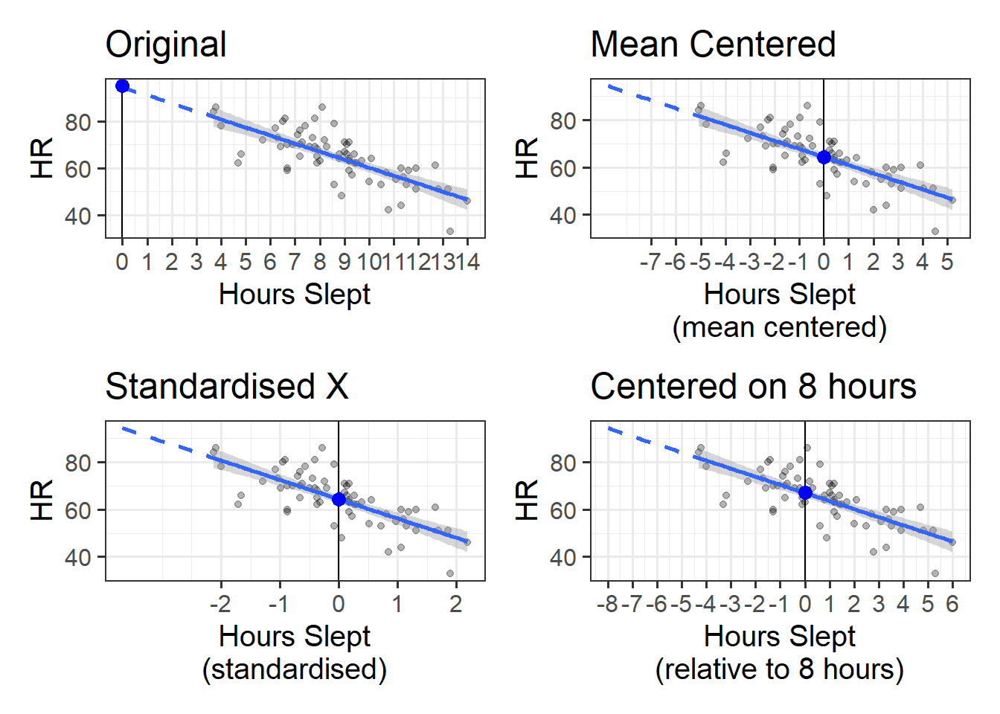
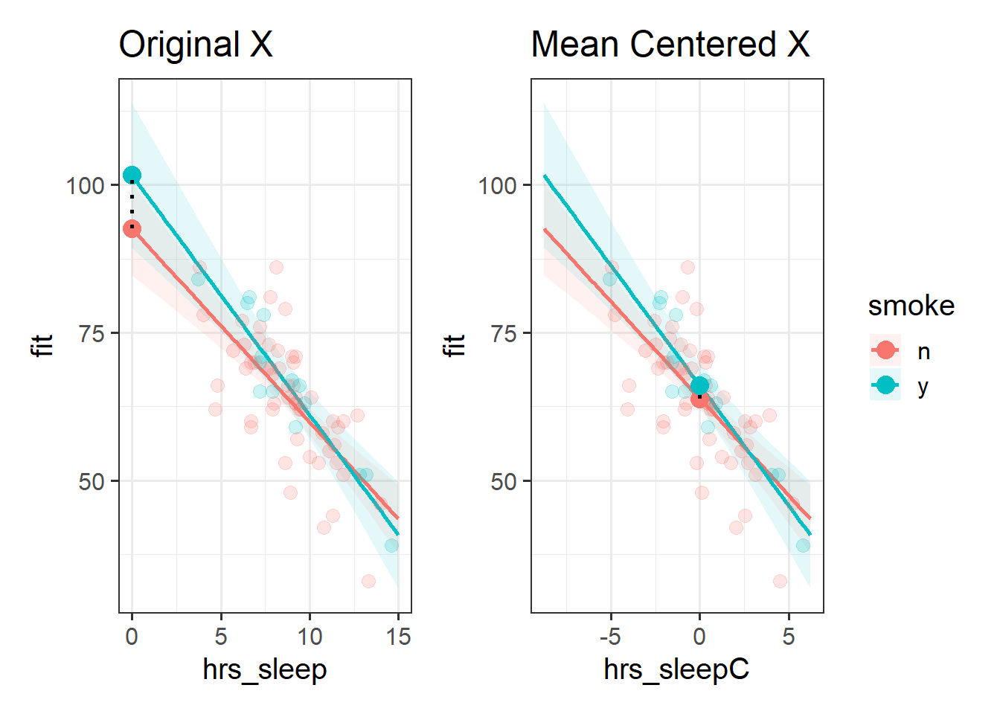
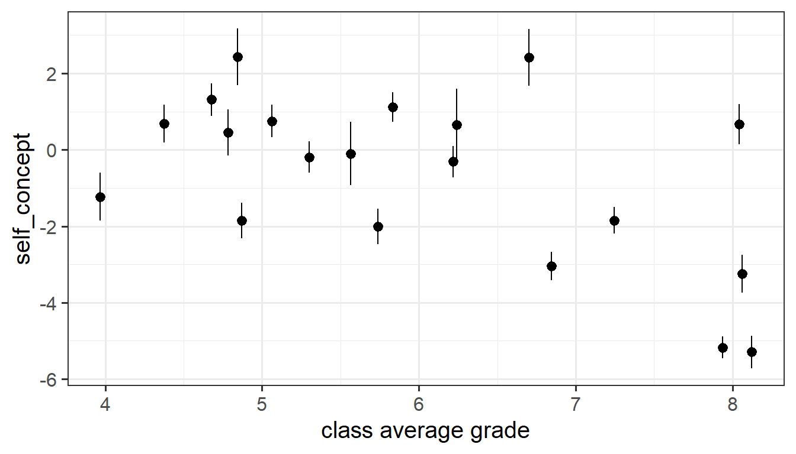
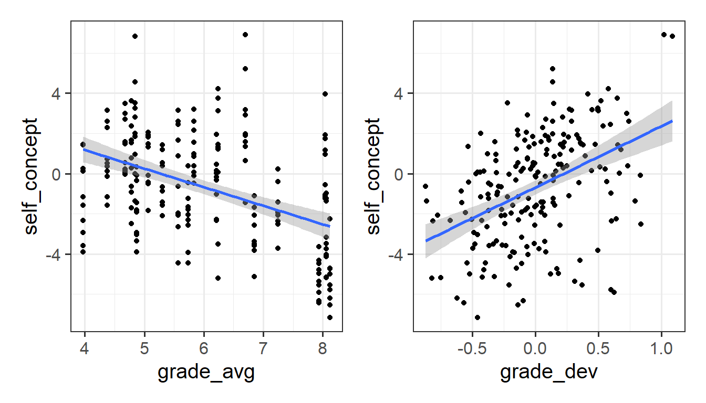

10: Centering
This reading:
- Centering and scaling predictors in single level regression
- Group-mean centering predictors in the multilevel model to separate out “within”-group effects from “between”-group effects
- Optional: contextual effects and the Mundlak model
Centering predictors in lm()
There are lots of ways we can transform a variable. For instance, we can transform something in millimeters to being in centimeters by dividing it by 10. We could transform a height variable into height above/below 2 meters variable by subtracting 2 meters from it.
A couple of common transformations we have seen already are ‘centering’ and ‘standardising’:
- When we “center” a variable, we subtracting some number (often the mean of the variable) from every value. So if we ‘mean-center’ a variable measuring height in cm, and the mean height of my sample is 175cm, then a value of 190 becomes +15, and a value of 150 becomes -25, and so on.
- When we ‘standardise’ a variable, we mean-center it and then divide the resulting values by the standard deviation. So if the standard deviation of heights in my sample is 15, then the value of 190 becomes \(\frac{190-175}{15} = \frac{15}{15} = 1\), and the 150 becomes \(\frac{150-175}{15} = \frac{-25}{15} = -1.67\).
How does this choice affect the linear models we might be fitting? The short answer is that it doesn’t! The overall fit of lm() is not changed in any way when we apply these linear1 transformations to predictors or outcomes.
However, transformations do change what we get out of our model:
- If we re-center a predictor on some new value (such as the mean), then all this does is change what “zero” means in our variable. This means that if we re-center a predictor in our linear model, the only thing that changes is our intercept. This is because the intercept is “when all predictors are zero”. And we are changing what “zero” represents!
- When we scale a predictor, this will change the slope. Why? Because it changes what “moving 1” represents. So if we standardise a variable, it changes both the intercept and the slope. However, note that the significance of the slope remains exactly the same, we are only changing the units that we are using to expressing that slope.
The example below shows a model of heart rates (HR) predicted by hours slept (hrs_sleep). In Figure 1 you can see our original model (top left), and then various transformations applied to our predictor. Note how these transformations don’t affect the model itself - the regression line (and the uncertainty in the line) is the same in each plot. We can see that re-centering changes what the intercept represents:
- In the top left plot, “0” represents zero hours slept, so the intercept (big blue dot) is the estimated heart rate for someone who didn’t sleep at all.
- Similarly, in the top right plot, “0” now represents the mean hours slept, so the intercept is the heart rate for someone who slept an average amount, and in the bottom right plot, “0” now represents 8 hours of sleep (the recommended amount).
- In the bottom left plot (where hours slept is ‘standardized’), not only have we changed what “0” represents, but we have changed what moving “1” represents. Rather being an increase of 1 hour of sleep, in this plot it represents an increase of 1 standard deviation hours sleep (whatever that is for our sample - it looks to be about 2.5). This means our estimated slope is the change in heart rate when having 1 SD more hours sleep (approx 2.5).
The thing to note is that the lines themselves are all the same, because the models are all exactly the same. We can prove this to ourselves by comparing the 4 models:
Code
hrdat <- read_csv("https://uoepsy.github.io/data/usmr_hrsleep.csv")
# original model:
mod_orig <- lm(HR ~ hrs_sleep, data = hrdat)
# model with hrs_sleep mean centered
mod_mc <- lm(HR ~ scale(hrs_sleep, scale=FALSE), data = hrdat)
# model with hrs_sleep standardised
mod_z <- lm(HR ~ scale(hrs_sleep), data = hrdat)
# model with hrs_sleep centered on 8 hours the I() function
# is a handy function that is just needed because the symbols
# + and - normally get interprted in lm() as adding
# and removing predictors.
mod_8 <- lm(HR ~ I(hrs_sleep-8), data = hrdat)
# all models are identical fit
anova(mod_orig, mod_mc, mod_z, mod_8)Analysis of Variance Table
Model 1: HR ~ hrs_sleep
Model 2: HR ~ scale(hrs_sleep, scale = FALSE)
Model 3: HR ~ scale(hrs_sleep)
Model 4: HR ~ I(hrs_sleep - 8)
Res.Df RSS Df Sum of Sq F Pr(>F)
1 68 3524.5
2 68 3524.5 0 -4.5475e-13
3 68 3524.5 0 0.0000e+00
4 68 3524.5 0 0.0000e+00
Centering when we have interactions
When we have an interactions in a model such as lm(y~x+z+x:z), the individual coefficients for x and z are specifically the associations “when the other variable included in the interaction is zero”. Because re-centering a variable changes the meaning of “zero”, this means that these two coefficients will change.
For instance, a model of heart rates (HR) that includes an interaction between hrs_sleep and whether someone smokes, our coefficient for smoke estimates the difference in HR between smokers vs non-smokers who get zero hours of sleep (red to blue point in the left-hand plot of Figure 2). If we mean-center the hrs_sleep variable in our model, then it becomes the estimated difference in HR between smokers vs non-smokers who get the average hours of sleep (red to blue point in the right-hand plot of Figure 2).

Centering predictors in multilevel models
In multilevel models, things can be a little bit different.
For one thing, there can be practical benefits to centering and/or scaling predictors with respect to actually fitting these models. Because multilevel models involve estimating group-level variability in intercepts and slopes, if our intercept is very far away from our data (e.g., if all our data is from ages 60 to 80, and we are estimating variability at age 0), then slight changes in a slope can have huge influences on estimated intercepts, resulting in models that don’t converge. We can see from the longitudinal example (Chapter 5), with the idea represented in Figure 3 - using raw age values the intercepts and slopes are highly correlated and the model won’t converge, but when we recenter the age variable on 60 and the intercept variation would become the variability in peoples’ cognition at the start of the study period, and the random intercepts are not so determined by the random slopes.

However, in some cases (typically in observational, rather than experimental studies), having multi-level data may mean that we can actually transform a predictor in a couple of ways - we can center it on a constant number like the overall mean/min/max, but we can also consider transformations within each group. The key here is that we don’t always have just have one “overall” mean for a predictor, but often we have different means for each group.
Group mean centering
Dataset: lmm_bflpe.csv
These data are simulated based on the “Big-fish-little-pond” effect in educational literature.
We are interested in better understanding the relationship between school children’s grades and their academic self-concept (their self-perception of ability in specific and general academic disciplines).
We have data from 20 classes of children, capturing information on their grades at school (range 0 to 10), and a measure of academic self-concept:
bfdat <- read_csv("https://uoepsy.github.io/data/lmm_bflpe.csv")
head(bfdat)# A tibble: 6 × 4
grade class self_concept child
<dbl> <dbl> <dbl> <dbl>
1 5.14 1 1.54 1
2 5.3 1 3.62 2
3 3.91 1 -0.65 3
4 4.48 1 -0.93 4
5 5 1 0.28 5
6 5.32 1 2.36 6In initial exploratory plots, we can see that there is plenty of variation in childrens’ grades - we have children scoring 3-4, all the way up to scoring almost 9. Note also, however, that the class’s average grades also vary substantially. For instance, classes 8,9,10 and 11 all have a very high average grade.
Code
library(patchwork)
ggplot(bfdat, aes(x=grade,y=self_concept))+
geom_point(alpha=.2) +
ggplot(bfdat,aes(x=class,y=grade))+
geom_jitter(height=0,width=.1,alpha=.2)+
stat_summary(geom="pointrange")+
coord_flip()When we plot the individual childrens’ score of ‘self-concept’ against grades, the picture becomes a bit clearer once we separate by the classes, where we can see that within each class there is a fairly positive trend.
Code
ggplot(bfdat,aes(x=grade,y=self_concept))+
geom_point(size=2,alpha=.4) +
ggplot(bfdat,aes(x=grade,y=self_concept))+
geom_point(size=2,alpha=.4)+
facet_wrap(~class)By contrast, the relationship between children’s self-concept scores and the average grade of their class shows a different pattern:
Code
bfdat <-
bfdat |>
group_by(class) |>
mutate(
grade_avg = mean(grade)
)
ggplot(bfdat,aes(x=grade_avg,y=self_concept))+
stat_summary(geom="pointrange")+
labs(x="class average grade")
So there are clearly two different things going on here!
- We have a positive association between a children’s grades relative to their peers’ grades and their self-concept. This maybe makes sense - comparisons with other people around you will influence your feelings of self worth.
- We almost see a negative association between the average grade of a child’s class and the child’s self-concept — i.e., children from classes with high grades tend to have slightly lower self-concept!
In the typical multilevel model that we might fit for this study (below), we just get out one single effect estimate, which represents the expected change in self-concept when a child’s grade increases by 1. But we have just seen how a child’s grades are driven by two things - their class as a whole, and their relative standing in their class.
rsmod <- lmer(self_concept ~ grade + (1 + grade | class),
data = bfdat)
summary(rsmod)Fixed effects:
Estimate Std. Error t value
(Intercept) -17.5685 1.8579 -9.456
grade 2.9327 0.3462 8.471What we want to do here is separate out effects that are “within” (i.e. having higher/lower grades than your classmates) from those that are “between” (i.e. being from a class with higher/lower grades than other classes). To get at these two effects, we are going to explicitly separate our predictor variable into two different parts:
- the group average
- individual deviations from the group average.
We can calculate these by first using group_by() to make the calculations be applied separately for each class, and then calculating the mean() grade (for each class), and the deviations for each child from their class’s average:
bfdat <-
bfdat |>
group_by(class) |>
mutate(
grade_avg = mean(grade),
grade_dev = grade - mean(grade)
)
head(bfdat)# A tibble: 6 × 6
# Groups: class [1]
grade class self_concept child grade_avg grade_dev
<dbl> <dbl> <dbl> <dbl> <dbl> <dbl>
1 5.14 1 1.54 1 4.78 0.357
2 5.3 1 3.62 2 4.78 0.517
3 3.91 1 -0.65 3 4.78 -0.873
4 4.48 1 -0.93 4 4.78 -0.303
5 5 1 0.28 5 4.78 0.217
6 5.32 1 2.36 6 4.78 0.537Note that the actual grade for each child can still be made from our two new columns, calculated as the avg_grade + grade_dev.
So let’s plot the association between each of these new variables and the self-concept scores:
Code
ggplot(bfdat, aes(x=grade_avg, y=self_concept))+
geom_point() +
geom_smooth(method="lm") +
ggplot(bfdat, aes(x=grade_dev, y=self_concept))+
geom_point() +
geom_smooth(method="lm")
So we can see that there are two different things going on here - the effect on self-concept of being in a high-performing class, as well as the effect of performing higher for your class.
The within-between model
Now that we have split up the variable grade into two parts (group average, and deviations-from-group-averages), we can actually put these in as separate predictors into our model!
This type of model is sometimes referred to as a “within-between” model. You can see below both the standard model with random slopes, and the ‘within-between’ model, in both lmer() syntax and in equation form.
Note that we while we replace one predictor (x) with its two constituent parts (the group means of x and the deviations from those group means), it is only the within effect that we can have a random slope for. This will hopefully make sense when we think a little about it, because the group-means are “between groups” - having a random slope of group_mean_x|group is similar to the idea of handedness|person, because for a single group, we don’t have “an effect on y of that group having a high average x”, so we can’t consider it to be an effect that varies by-group.
random slopes model
lmer(y ~ 1 + x + (1 + x | g), data)\[ \begin{align} \text{For observation }j&\text{ in cluster }i \\ \text{Level 1:}& \\ y_{ij} &= b_{0i} + b_{1i} \cdot x_{ij} + \varepsilon_{ij} \\ \text{Level 2:}& \\ b_{0i} &= \gamma_{00} + \zeta_{0i} \\ b_{1i} &= \gamma_{10} + \zeta_{1i} \\ & \qquad \\ \text{Where:}& \\ & \begin{bmatrix} \zeta_{0i} \\ \zeta_{1i} \end{bmatrix} \sim N \left( \begin{bmatrix} 0 \\ 0 \end{bmatrix}, \begin{bmatrix} \sigma_0 & \rho_{01} \\ \rho_{01} & \sigma_1 \end{bmatrix} \right) \\ &\varepsilon_{ij} \sim N(0,\sigma_\varepsilon) \\ \end{align} \]
within-between model
data <- data |>
group_by(g) |>
mutate(
x_avg = mean(x),
x_dev = x - mean(x)
)
lmer(y ~ 1 + x_dev + x_avg + (1 + x_dev | g), data)\[ \begin{align} \text{For observation }j&\text{ in cluster }i \\ \text{Level 1:}& \\ y_{ij} &= b_{0i} + b_{1i} \cdot (x_{ij} - \bar{x}_i) + b_{2} \cdot \bar{x}_i + \varepsilon_{ij} \\ \text{Level 2:}& \\ b_{0i} &= \gamma_{00} + \zeta_{0i} \\ b_{1i} &= \gamma_{10} + \zeta_{1i} \\ & \qquad \\ \text{Where:}& \\ & \begin{bmatrix} \zeta_{0i} \\ \zeta_{1i} \end{bmatrix} \sim N \left( \begin{bmatrix} 0 \\ 0 \end{bmatrix}, \begin{bmatrix} \sigma_0 & \rho_{01} \\ \rho_{01} & \sigma_1 \end{bmatrix} \right) \\ &\varepsilon_{ij} \sim N(0,\sigma_\varepsilon) \\ \end{align} \]
In the context of our educational study of grades and self-concept in school children, we can fit a model that disaggregates within (grade relative to class) and between (class average grade) effects:
wbmod <- lmer(self_concept ~ grade_dev + grade_avg +
(1 + grade_dev|class),
data = bfdat)The fixed effects from this model (below) now show two effects, as opposed to only one that we would get from our typical model:
typical random slopes model
| term | est | SE | t |
|---|---|---|---|
| (Intercept) | -17.57 | 1.86 | -9.46 |
| grade | 2.93 | 0.35 | 8.47 |
within-between model
| term | est | SE | t |
|---|---|---|---|
| (Intercept) | 3.46 | 1.83 | 1.89 |
| grade_dev | 3.11 | 0.35 | 8.97 |
| grade_avg | -0.69 | 0.30 | -2.33 |
- the “within” effect: for every one grade higher a child is relative to their classmates, their self-concept is expected to increase by 3.11.
- the “between” effect: for every 1 grade higher a class average is (and when a child’s relative standing in the class stays constant), a child’s self-concept is expected to decrease by -0.69.
So what exactly does the effect (the estimate of 2.93) from our more traditional model show here? Is it the within effect or the between effect? It’s actually a smushing together of both parts - it is the estimated effect on self-concept when a child’s grade increases by 1, but it is confounded by the fact that as childrens’ grades increase then their class average increases a bit too, meaning that the between effect pulls this back down. In short - it’s not actually a very useful estimate for us at all, because it conflates the two different effects.
Optional: contextual effects and the mundlak model
Along with the within-between model, we could also choose to adjust for the group averages while continuing to use the original raw predictor in the model. This is often called the “Mundlak model” in reference to Yair Mundlak who wrote about it in the context of avoiding group-level confounding (see Chapter 9 #optional-extra-group-confounding).
The formulation is very similar to the within-between model, but we don’t use the “deviations from group means”, we simply use the original predictor along with the group means:
within-between model
data <- data |>
group_by(g) |>
mutate(
x_avg = mean(x),
x_dev = x - mean(x)
)
lmer(y ~ 1 + x_dev + x_avg + (1 + x_dev | g), data)\[ \begin{align} \text{For observation }j&\text{ in cluster }i \\ \text{Level 1:}& \\ y_{ij} &= b_{0i} + b_{1i} \cdot (x_{ij} - \bar{x}_i) + b_{2} \cdot \bar{x}_i + \varepsilon_{ij} \\ \text{Level 2:}& \\ b_{0i} &= \gamma_{00} + \zeta_{0i} \\ b_{1i} &= \gamma_{10} + \zeta_{1i} \\ & \qquad \\ \text{Where:}& \\ & \begin{bmatrix} \zeta_{0i} \\ \zeta_{1i} \end{bmatrix} \sim N \left( \begin{bmatrix} 0 \\ 0 \end{bmatrix}, \begin{bmatrix} \sigma_0 & \rho_{01} \\ \rho_{01} & \sigma_1 \end{bmatrix} \right) \\ &\varepsilon_{ij} \sim N(0,\sigma_\varepsilon) \\ \end{align} \]
mundlak model
data <- data |>
group_by(g) |>
mutate(
x_avg = mean(x)
)
lmer(y ~ 1 + x + x_avg + (1 + x | g), data)\[ \begin{align} \text{For observation }j&\text{ in cluster }i \\ \text{Level 1:}& \\ y_{ij} &= b_{0i} + b_{1i} \cdot x_{ij} + b_{2} \cdot \bar{x}_i + \varepsilon_{ij} \\ \text{Level 2:}& \\ b_{0i} &= \gamma_{00} + \zeta_{0i} \\ b_{1i} &= \gamma_{10} + \zeta_{1i} \\ & \qquad \\ \text{Where:}& \\ & \begin{bmatrix} \zeta_{0i} \\ \zeta_{1i} \end{bmatrix} \sim N \left( \begin{bmatrix} 0 \\ 0 \end{bmatrix}, \begin{bmatrix} \sigma_0 & \rho_{01} \\ \rho_{01} & \sigma_1 \end{bmatrix} \right) \\ &\varepsilon_{ij} \sim N(0,\sigma_\varepsilon) \\ \end{align} \]
We can fit the Mundlak formulation to our grades & self-concept data as follows:
mlakmod <- lmer(self_concept ~ grade + grade_avg +
(1 + grade|class),
data = bfdat)There are two things to note here when comparing the Mundlak formulation to the ‘within-between’ model. Firstly, these two models provide the same ‘within’ effect (the fixed effects of grade_dev and grade in the tables below), because they both get the effect of a child’s grade increasing by 1, while holding their class’s average grade constant.2 Secondly, the estimated effects for the grade_avg predictor differ substantially between the two models:
Within-between model
| term | est | SE | t |
|---|---|---|---|
| (Intercept) | 3.46 | 1.83 | 1.89 |
| grade_dev | 3.11 | 0.35 | 8.97 |
| grade_avg | -0.69 | 0.30 | -2.33 |
Mundlak model
| term | est | SE | t |
|---|---|---|---|
| (Intercept) | 3.28 | 2.21 | 1.48 |
| grade | 3.10 | 0.34 | 9.12 |
| grade_avg | -3.67 | 0.34 | -10.91 |
The difference here is that they are capturing two distinct effects. The within-between formulation captures a ‘between effect’ and the Mundlak formulation provides something that gets termed the “contextual effect”.
The key thing to distinguish between these two is to think about what is being “held constant”. In the within-between model, the effect of avg_grade is estimated while holding constant the child’s relative standing in the group. In the Mundlak model, the effect is estimated while holding constant a child’s actual grade.
It may help to think about this in terms of a single child. Suppose we have a child who has a grade of 5.14, from a class with an average of 4.783. So that child is 0.357 above their class average.
# A tibble: 1 × 5
# Groups: class [1]
class child grade_avg grade_dev self_concept
<chr> <chr> <dbl> <dbl> <chr>
1 i j 4.78 0.357 y Both models are estimating “what would we expect to happen to the child’s self-concept if their class had an average of 5.783 instead?”
The within-between model estimates this but holds constant the child’s deviation above the average, so we’re comparing the scenario where the child is 0.357 above a class average of 5.783, as opposed to being 0.357 above a class average of 4.783.
# A tibble: 2 × 6
# Groups: class [1]
class child grade_avg grade_dev grade self_concept
<chr> <chr> <dbl> <dbl> <dbl> <chr>
1 i j 4.78 0.357 5.14 y
2 i j 5.78 0.357 6.14 y-0.69 By contrast, the Mundlak model holds constant the child’s actual grade, meaning that we’re comparing the scenario where the child has a grade of 5.14 and is in a class with an average of 5.783, as opposed to having that same grade of 5.14 but being in a class with an average of 4.783:
# A tibble: 2 × 5
# Groups: class [1]
class child grade_avg grade self_concept
<chr> <chr> <dbl> <dbl> <chr>
1 i j 4.78 5.14 y
2 i j 5.78 5.14 y-3.67 We can think of this visually. Take a given child from a given class, and think about what would happen if their whole class average grade increased by 1. In Figure 4, the red line is “class 1” in our data, and the blue line is a counterfactual world of “class 1 if its average grade increased by 1”. The large red dot represents the expected self-concept for “child 1”.
In the within-between model, we’re estimating the self-concept difference for a child between the red (actual) and blue (counterfactual class with a higher average), but where the child stays the same amount “above average” in this counterfactual class. In the Mundlak model, we’re estimating the self-concept difference when a child stays at the same grade but is in a different context (is placed in a class where the average is 1 higher).
11 12 13 14 15 16 17
-0.6887448 -0.6887448 -0.6887448 -0.6887448 -0.6887448 -0.6887448 -0.6887448
18 19 20
-0.6887448 -0.6887448 -0.6887448 11 12 13 14 15 16 17
-0.5562254 -0.5562254 -0.5562254 -0.5562254 -0.5562254 -0.5562254 -0.5562254
18 19 20
-0.5562254 -0.5562254 -0.5562254 Footnotes
the fit of models does change if we apply a non-linear transformation, such as \(x^2\), \(log(x)\), etc., and this can sometimes be useful for studying effects that are more likely to be non-linear!↩︎
when we exclude the random intercepts, the within-effects from both models are numerically identical, but there may be small differences due to the random slopes of
x|gfor the mundlak model andx_dev|gfor the within-between model↩︎